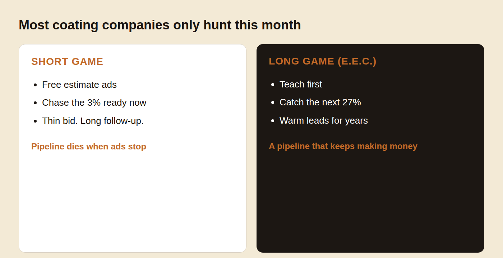
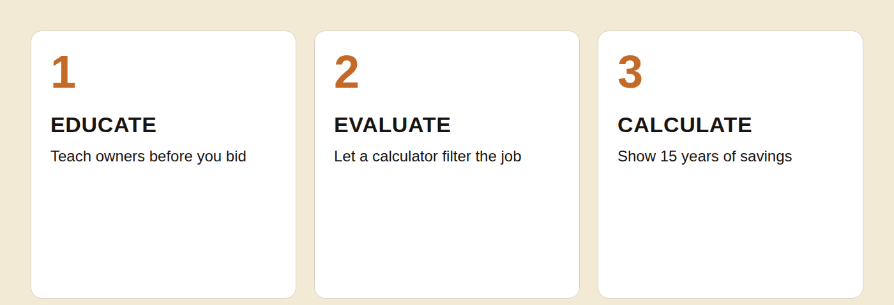
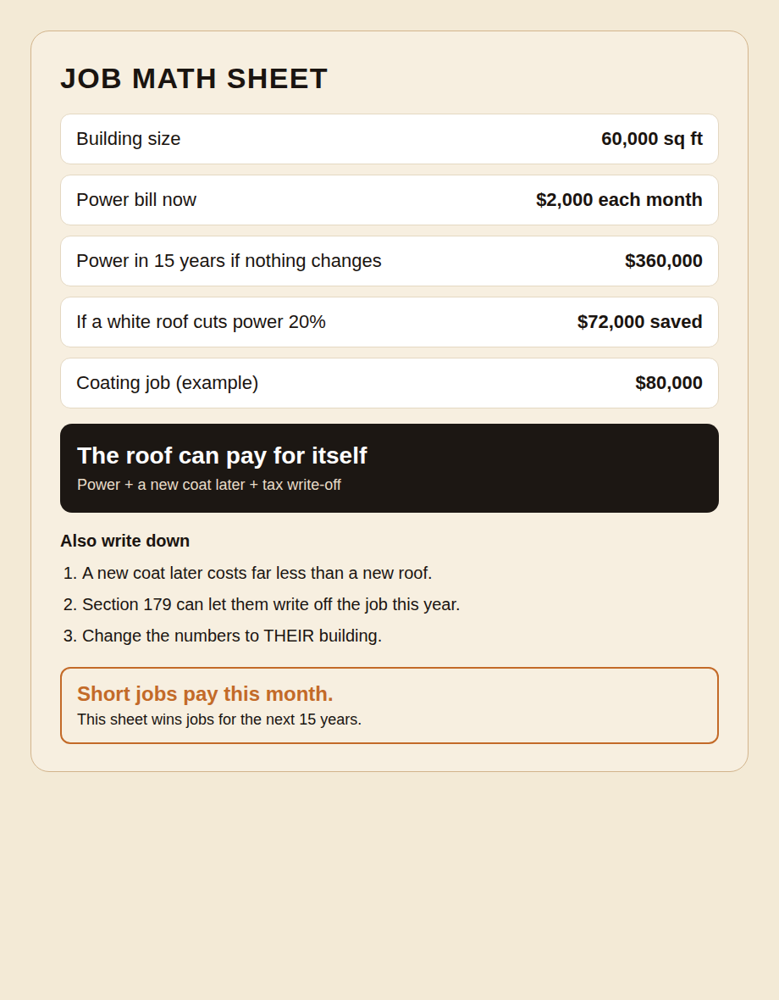
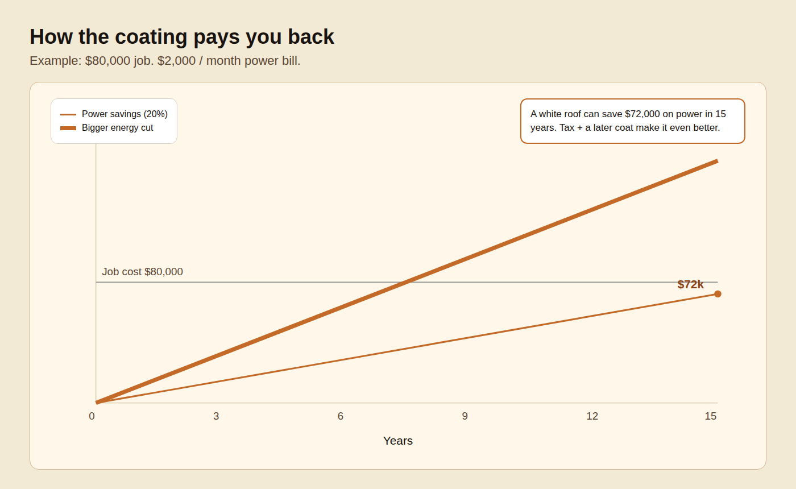

Sell more commercial roof coating jobs by walking the owner to a no-brainer.
Educate the building owner. Let them evaluate the fit. Then calculate the savings. High-ticket coating sales get easier when the prospect is already warm, qualified, and looking at the math.
Why traditional commercial roofing sales does not work like it used to
Do you struggle getting in front of enough of the RIGHT building owners in your area?
Do you find yourself wasting time with unqualified prospects or chasing dead end leads?
Do you wish you could close more commercial roof coating jobs FAST rather than spending months or years following up?
If you answered YES to any of those 3 questions... you are in good company.
Most commercial roof coating contractors face these problems in their businesses. It's easy to blame "the industry", "the economy", or chalk it up to "that's just how things have always been."
But what if there was a better, faster, smarter way to grow your commercial roof coating business?
What if you could generate 20–30 high quality leads every month?
What if those leads came to you pre-qualified and even educated on all the benefits of coatings?
This is all possible and even simple if you simply refuse to keep doing business the "old school" way.
What exactly is the "old school" way you may be asking.
Well, to start...
You generate some leads with flyers, door knocking, maybe some SEO, and some telemarketing. Your message is along the lines of "Get A Free Roof Restoration Estimate!" and "Don't Replace Your Roof, Restore It".
Then when you get a lead, you perform an inspection, and you provide a bid. Typically a one or two pager invoice-style bid.
There is nothing wrong with this process, it works.
But is there a better way?
There is...
It's called The E.E.C. Method.
The EEC Method combines the time tested approach of Consultative Sales and Education Marketing to create a powerful framework for growing your roof coating business.
It's engineered to help commercial roof coating contractors get more qualified leads and close them with ease.
Below you will find a thorough explanation of the process. It is our wish for you to take it and apply it in your business. You have everything you need to get started below.
Old-school sales
Flyers, door knocking, maybe some SEO, and some telemarketing.
The message: "Get A Free Roof Restoration Estimate!" and "Don't Replace Your Roof, Restore It".
Then inspect, and provide a one or two pager invoice-style bid.
There is nothing wrong with this process, it works.
The E.E.C. Method
Consultative Sales and Education Marketing, built for coatings.
Educate building owners in mass — 1,000:1, not 1:1.
Let them evaluate the fit with a calculator before you roll a truck.
Calculate the savings so you walk the owner to a no-brainer.

The E.E.C. Method: Educate, Evaluate, Calculate
1
Educate
How to generate high-quality roof coating leads with Education Marketing.
2
Evaluate
How to pre-qualify leads with a free online evaluation tool.
3
Calculate
How to close more deals FASTER by calculating the savings with the prospect.

1
Educate
How to generate high-quality roof coating leads with Education Marketing.
When you're selling a high-ticket product or service, like a commercial roofing solution, your prospect has to take a lot of factors into consideration to make a decision. It only makes sense that the more educated and qualified the prospect is before you meet, the higher the likelihood of you closing the sale would be.
Restoring or replacing a commercial roof can often be very expensive and complicated. The expense and complexity of the purchase leads to the building owner often putting off making the decision and going cold on you.
We want to avoid this at all costs.
Using Education Marketing, you can completely revolutionize your commercial roofing business by allowing your leads to come to you educated, pre-qualified, and ready to make a decision.
Education Marketing is pretty straight forward.
You simply assume the role of the AUTHORITY & TRUSTED ADVISOR in the sales process.
In a perfect scenario, you'd want to bring the building owner into your business by first educating him on commercial roofing solutions. The sooner you can start educating your prospects in your business, the easier it will be to get the sale.
Would you prefer to deal with cold, uneducated prospects? Or would you prefer dealing with only warm, educated prospects who already KNOW, LIKE, and TRUST you because you were the source of their new found knowledge?
This is the beauty of Education Marketing. By presenting the building owner with valuable information leading up to them reaching out to you, you're elevating yourself above the competition by showing the prospect you're looking out for their best interest.
You're not just any old roofing contractor who wants the job and the money. You're a true EXPERT in your field who is able to confidently teach the building owner and look out for his best interest.
How It Works
You're probably already doing Education Marketing and you don't even know it.
If you've ever explained the benefits of roof coating to a prospect over the phone or in person, you've done Education Marketing.
The Education Marketing involved in the EEC Method takes things to a whole new level.
Rather than educating the prospect 1:1 or just one at a time, The EEC Method allows you to harness your knowledge and expertise, turn it into an article, e-book, or a video and allow your Education Marketing work 1,000:1 instead of just 1:1.
The EEC Method is about using LEVERAGE to EDUCATE building owners in mass.
A great way to do this is to create a simple and straightforward blog post for your website titled:
“10 Things [STATE] Building Owners Must Know About Roof Coating”.
Then simply list the 10 valuable pieces of information that you want every building owner to know. This type of blog post is very effective at capturing the attention of a building owner because it's not selling anything.
If you're not a great writer, not to worry.
Have someone record you on a phone camera while on a roof, explaining why you believe coatings are a great option for building owners, what roof types are great for coatings, and any other valuable topic or question you can think of.
There's absolutely nothing wrong with hiring a professional writer to interview you on the topic of roof coatings, record the interview, and then transcribe the interview into your very own e-book or collection of blog posts.
The goal is to get the building owner to think “Wow, this contractor is a true expert!”
This leads to them TRUSTING you because you were able to teach them something new and of incredible value and importance.
Once your content is created, it's important to get it in front of as many building owners and property managers as possible.
Marketing only works if it's seen by the RIGHT PROSPECTS.
You can do this by posting a link to your blog on Facebook, printing it out and mailing it to building owners in your area, or even add property managers on LinkedIn and share it with them privately. There are endless ways to get your Education Marketing out there.
Direct sales messages or offers rarely work well on social media. So anything along the lines of “Get a free commercial roofing estimate” or “Call us if you need any flat roof repair” is likely to fall on deaf ears.
Your prospects are not on Facebook or LinkedIn to find a roofing contractor, so they're more likely to ignore any direct approaches.
Education Marketing works by providing VALUE and CONTENT in the form of articles, videos, or e-books. It's harmless, non-threatening, and people won't feel like they're being sold to.
Keep in mind that at any given time, only ~3% of a market is “Ready To Buy Now.” But another ~27% is going to be buying in the next 6 to 24 months.
Education Marketing allows you to tap into the much larger pool of prospects that just aren't ready today, but if presented with the right information, they'll reach out to you wanting to learn more or get an estimate.
The ROI of Education Marketing
Education Marketing is known for having a great ROI in almost every industry. The reason is it doesn't cost much to create content, and you only need to do it once.
There's little point in creating a weekly article about roof coating, when 90% of the information and benefits can be explained in as little as 1 to 3 well written articles or videos.
It's a “set it and forget it” approach to marketing.
2
Evaluate
How to pre-qualify leads with a free online evaluation tool.
After you've Educated your prospect, you've earned their attention. At this point, some of them will be ready to call you and get a roof coating estimate. But many more just won't be at that stage, yet.
This is where we want to let them EVALUATE their situation and determine if roof coating is right for them.
You can accomplish this by providing them with a FREE COST ESTIMATE CALCULATOR that they can use to get a ballpark estimate.
A Cost Estimate Calculator that will calculate the approximate cost for a roof coating based on the answers the building owner provides.
The Benefits
This strategy is incredibly effective because it allows you to provide the building owner with additional value, without you having to do a thing. The calculator will do the work for you.
This also does a great job of filtering out the tire-kickers who just want a price and don't plan on getting the roof restored any time soon.
Any leads generated from a calculator are higher quality because they are already aware of the approximate cost.
Otherwise, they won't ask for you to come out and provide an estimate.
Again, the key here is we're using LEVERAGE to EDUCATE and EVALUATE building owners in mass rather than 1:1.
You're limited to the number of building owners you can speak to in one day, but a blog post and a calculator can cater to 10,000 building owners per day.
3
Calculate
How to close more deals FASTER by calculating the savings with the prospect.
By properly educating the building owner, evaluating their situation, and then CALCULATING the project long-term savings… you're walking them to a “No-Brainer” scenario.
Commercial roofers typically don't take the time needed to break down the savings of roof coating properly for the building owner.
Roof Coating is much cheaper than roof replacement - we know that.
They know that too, but roof coating can also help lower their utility bills by up to 25%.
Wouldn't it make sense to show the building owner how much MONEY HE COULD SAVE OVER 15 YEARS with a white reflective roof?
Let's say his electric bill is $2,000/month. Over 15 years he will spend $360,000 on electricity.
$2,000monthly electric bill
15 years$360,000 spent on power
$72,000saved at just 20%
If he's able to save just 20% on his electricity bill, over 15 years that's an amazing savings of over $72,000. With an SPF system, the savings can be even greater leading the roof to pay for itself in just 7 years in some cases.
But let's not stop there…
We know that a roof coating can be recoated at the end of its lifecycle. That's another opportunity for huge savings. Another coating is much cheaper than another replacement.
This is another area of savings you can highlight for your prospect.
And then there's the immediate tax deduction via IRS Section 179 that allows the building owner to deduct the full expense of the roof coating that year on their taxes.
This is a HUGE incentive for building owners in our experience.


By properly educating the building owner, evaluating their situation, and then CALCULATING the project long-term savings… you're walking them to a “No-Brainer” scenario.
Ready to transform your commercial roof coating business?
You've just uncovered the E.E.C. Method—a proven strategy to attract qualified leads, streamline your sales process, and close deals faster. But understanding the method is just the beginning.
Imagine implementing this system with expert guidance tailored to your business. Our team is here to help you turn insights into action.
Book your FREE Area Domination Call now to explore how the E.E.C. Method can revolutionize your commercial roofing business.